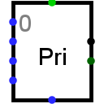

Шифратор (приоритетный)
Шифратор (приоритетный)
| Библиотека: | Коммутаторы |
| Введён в: | 2.3.0 |
| Внешний вид: |
 |
Поведение
Этот компонент функционирует как шифратор. В отличие от классического шифратора, который ожидает active сигнал строго на одном входе, приоритетный шифратор обрабатывает ситуации с несколькими активными сигналами: он определяет индексы всех входов, на которых присутствует логическая 1, и выдает на выход наибольший (старший) индекс. Например, если на входах 0, 2, 5 и 6 одновременно установлена логическая 1, то шифратор выдаст значение 110 (двоичное представление числа 6). Если ни на одном из входов нет единицы, либо если компонент отключен, то на выходе формируется высокоимпедансное состояние (Z).
Шифратор спроектирован так, что несколько таких компонентов можно соединять последовательно для увеличения числа входов. Для этого используются вход разрешения (EI) и выход разрешения (EO). Когда на входе разрешения (EI) логический 0, компонент отключается, а его выходы переходят в высокоимпедансное состояние (Z). Выход разрешения (EO) принимает значение 1, когда компонент включен, но ни на одном из его информационных входов нет логической 1. Таким образом, можно подключить выход разрешения (EO) первого шифратора ко входу разрешения (EI) второго: если на какой-либо из информационных входов первого шифратора поступает 1, то второй шифратор отключается (его выходы переходят в высокоимпедансное состояние (Z)). Если же на входах первого шифратора нет единиц, его выход будет находиться в высокоимпедансном состоянии (Z), а второй шифратор включится и будет определять активный вход с наивысшим приоритетом.
Дополнительный выход шифратора — сигнал группы (GS) — принимает значение 1, когда компонент включен и хотя бы на одном из его информационных входов присутствует логическая 1. При последовательном соединении шифраторов этот сигнал (GS) помогает определить, какой именно из них сработал.
Контакты (при направлении компонента вправо):
- Контакты на левой стороне, переменное количество (входы, разрядность равна 1):
- Информационные входы, нумеруются по порядку сверху вниз, начиная с 0.
- Правый верхний контакт (выход, разрядность соответствует атрибуту Разрядность адреса):
- Выход: адрес активного входа с наивысшим приоритетом (наибольший индекс входа с логической 1). Если ни один вход не равен 1 или компонент отключен через вход разрешения (EI), на выходе формируются неинициализированные значения (U).
- Правый нижний контакт (выход, разрядность равна 1):
- Сигнал группы (GS): 1, если компонент включен и хотя бы на одном информационном входе установлена 1; в противном случае — 0.
- Нижний контакт (вход, разрядность равна 1):
- Вход разрешения (EI): логический 0 отключает компонент, 1 — включает.
- Верхний контакт (выход, разрядность равна 1):
- Выход разрешения (EO): принимает значение 1, если компонент включен, но на всех информационных входах установлены логические 0; в противном случае — 0.
Атрибуты
Когда компонент выбран или добавляется, цифровые клавиши от 1 до 4 меняют его атрибут Разрядность адреса, а клавиши со стрелками — его атрибут Направление.
- Направление
- Направление компонента (его основного выхода относительно входов).
- Разрядность адреса
- Разрядность основного выхода компонента. Количество информационных входов шифратора равно 2Разрядность_адреса.
- При отключенном выходе
- Определяет состояние выходов при отключении компонента (когда на входе разрешения логический 0). Доступны варианты: Z-состояние (высокоимпедансное состояние (Z) на выходе) или Ноль.
Поведение Инструмента «Нажатие»
Не предусмотрено.
Назад к Справке по библиотеке